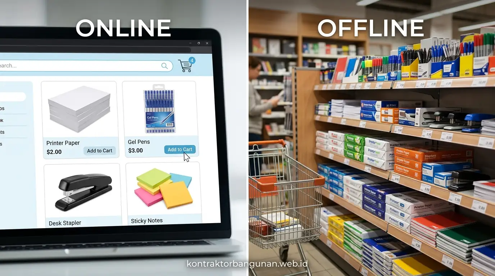

Bandingkan Supplier ATK Online vs Offline: Mana Lebih Efisien?
Perbandingan supplier ATK online vs offline menunjukkan bahwa pengadaan online B2B menghemat biaya hingga 28% dan mempercepat proses approval pengadaan kantor.


Analisis efisiensi pengadaan perlengkapan alat tulis kantor antara jalur digital B2B terpadu dengan toko ritel stasioneri fisik.
- Efisiensi Anggaran: Supplier online B2B menawarkan harga tiering grosir distributor dengan potongan volume hingga 20–30%.
- Otomatisasi Administrasi: Pengadaan online memangkas waktu pembuatan PO, rekap nota fisik, dan penerbitan faktur pajak elektronik.
- Fleksibilitas Cash Flow: Vendor B2B modern menyediakan fasilitas kredit tempo pembayaran (Term of Payment 14 hingga 30 hari).
- Solusi Hybrid: PerlengkapanKantor menggabungkan kemudahan katalog e-procurement online dengan kecepatan logistik gudang lokal.
- Mengapa Memilih Antara Supplier ATK Online vs Offline Menjadi Dilema Tim Procurement?
- Apa Saja Kelebihan Beli ATK Online untuk Efisiensi Waktu dan Transparansi Anggaran?
- Kapan Pengadaan ATK Melalui Toko Offline Konvensional Masih Tetap Relevan?
- Tabel Komparasi Menyeluruh: Supplier ATK Online B2B vs Toko Alat Tulis Offline
- Bagaimana Cara Memilih Distributor ATK Murah yang Kredibel dengan Fasilitas TOP?
- Mengapa PerlengkapanKantor Menjadi Solusi Hybrid Procurement Terbaik di Indonesia?
- FAQ: Pertanyaan Penting Seputar Pemesanan ATK Grosir & Kontrak B2B
- Kesimpulan Praktis
Mengapa Memilih Antara Supplier ATK Online vs Offline Menjadi Dilema Tim Procurement?
Dilema memilih supplier ATK timbul karena kebutuhan mendesak harian sering kali berbenturan dengan tuntutan penghematan anggaran bulanan dan kepatuhan faktur pajak perusahaan.
Bagi manajer pengadaan (Procurement Manager) dan General Affairs (GA), mengelola kebutuhan alat tulis kantor (ATK) bukanlah tugas sepele. Ratusan jenis barang—mulai dari kertas HVS rim, tinta printer, ordner, map snelhechter, hingga alat perekat—harus selalu tersedia agar produktivitas ratusan karyawan tidak terhenti. Berdasarkan survei Indonesian Supply Chain Benchmark (2025), pengeluaran ATK dan perlengkapan harian menyumbang sekitar 3% hingga 5% dari total biaya operasional kantor, namun memakan lebih dari 25% waktu administrasi staf GA jika dikerjakan secara manual.
Banyak perusahaan masih terjebak pada kebiasaan lama: staf disuruh pergi ke toko buku fisik atau pasar grosir terdekat setiap kali barang habis. Selain menghabiskan waktu di perjalanan dan macetnya lalu lintas kota besar, pembelian sporadis ini menyulitkan kontrol audit keuangan karena struk kasir sering hilang atau tidak menyertakan faktur pajak PPN.
Apa Saja Kelebihan Beli ATK Online untuk Efisiensi Waktu dan Transparansi Anggaran?
Kelebihan beli ATK online mencakup akses harga grosir tangan pertama, pemesanan ulang otomatis (re-order), faktur pajak digital instan, serta laporan rekapitulasi belanja departemen.
Beralih ke supplier digital B2B terpadu memberikan lompatan efisiensi yang signifikan bagi korporasi:
Memotong rantai pasok tengkulak pihak ketiga, memberikan diskon kuantitas hingga 30% untuk pembelian kartonan.
Seluruh transaksi otomatis dilengkapi faktur pajak PPN 11% yang siap dikreditkan oleh tim akuntansi kantor Anda.
Armada logistik mengirimkan paket ATK langsung ke meja divisi kantor pusat maupun kantor-kantor cabang di berbagai kota.
Mendukung fleksibilitas likuiditas arus kas operasional dengan opsi pembayaran invoice 14 hingga 30 hari kalender.
Kapan Pengadaan ATK Melalui Toko Offline Konvensional Masih Tetap Relevan?
Toko ATK offline konvensional relevan hanya untuk situasi darurat mendesak saat barang habis mendadak di tengah hari rapat dan dibutuhkan dalam hitungan menit.
Meskipun sistem daring memiliki keunggulan mutlak untuk pengadaan terencana bulanan, toko ritel stasioneri fisik di dekat kantor tetap memiliki peran sebagai penopang emergency buffer. Sebagai contoh, jika rapat pemegang saham dimulai dalam waktu 30 menit dan tinta printer tiba-tiba habis, membeli 1 botol tinta darurat di toko terdekat adalah langkah taktis yang masuk akal.
Gudang distribusi ATK skala besar dengan sistem manajemen stok modern untuk pengiriman cepat ke ratusan perusahaan rekanan B2B.
Namun, menjadikan toko ritel offline sebagai sumber pengadaan utama bulanan adalah pemborosan besar. Harga di tingkat toko eceran rata-rata 15%–35% lebih mahal dibandingkan harga distributor grosir tangan pertama. Selain itu, toko fisik sering kali tidak dapat memberikan garansi ketersediaan barang dalam volume ratusan rim secara kontinu.
Tabel Komparasi Menyeluruh: Supplier ATK Online B2B vs Toko Alat Tulis Offline
Tabel perbandingan berikut menyajikan parameter vital yang menentukan efisiensi proses pengadaan barang bagi tim General Affairs dan Procurement perusahaan.
| Parameter Evaluasi | Supplier ATK Online B2B (PerlengkapanKantor) | Toko ATK Fisik / Ritel Offline |
|---|---|---|
| Struktur Harga | Harga grosir tiering langsung distributor / pabrikan | Harga eceran ritel dengan margin toko berlapis |
| Metode Pembayaran | Term of Payment (TOP 14–30 hari), Invoice bulanan, PO resmi | Cash / EDC langsung tunai di kasir pada hari pembelian |
| Faktur Pajak (PPN) | Tersedia otomatis e-Faktur resmi untuk laporan SPT | Sering kali hanya nota kasir manual tanpa faktur pajak |
| Biaya Waktu & Staf | 0 jam keluar kantor (cukup pesan via portal / WA sales) | 3–5 jam staf GA keluar kantor belanja dan membawa barang |
| Layanan Pengiriman | Gratis antar langsung ke lantai/ruangan kerja perusahaan | Self-pickup / harus membawa sendiri menggunakan kendaraan |
| Jaminan Retur / Rusak | Garansi tukar baru 1x24 jam resmi dari distributor | Kebijakan retur terbatas tergantung toko masing-masing |
Bagaimana Cara Memilih Distributor ATK Murah yang Kredibel dengan Fasilitas TOP?
Memilih distributor ATK murah yang kredibel memerlukan verifikasi legalitas PT, kelengkapan surat izin usaha, ketersediaan gudang fisik, dan kejelasan klausul kontrak SLA pengiriman.
Sebelum menandatangani perjanjian kerjasama pengadaan tahunan dengan vendor ATK, pastikan Anda memeriksa 4 kriteria verifikasi utama:
- Legalitas dan Rekening Badan Usaha: Pastikan pembayaran ditujukan ke rekening atas nama perusahaan resmi (PT / CV), bukan rekening pribadi perorangan.
- Keaslian Produk (Originality Guarantee): Pastikan produk bermerek (seperti kertas PaperOne/Sinar Dunia, ordner Bantex, pulpen Pilot/Snowman) merupakan barang asli, bukan rekondisi atau oplosan.
- Kapasitas Pasokan Multi-Item: Pilih vendor yang memiliki ekosistem produk lengkap—mulai dari ATK kertas, filing system, brankas dokumen, hingga kursi ergonomis dan furnitur kantor.
- Service Level Agreement (SLA): Adanya komitmen waktu maksimal pengiriman (misal maksimal 2 hari kerja setelah PO diterbitkan).
Mengapa PerlengkapanKantor Menjadi Solusi Hybrid Procurement Terbaik di Indonesia?
PerlengkapanKantor memadukan kemudahan platform online B2B dengan jaringan gudang fisik Jabodetabek yang menjamin suplai ATK cepat, murah, dan bergaransi resmi.
Sebagai mitra pengadaan resmi ratusan korporasi, perbankan, BUMN, dan institusi pendidikan, PerlengkapanKantor menghadirkan pengalaman pengadaan yang bebas repot:
- Sistem Penawaran Kilat (Fast RFQ Response): Tim konsultan kami memberikan penawaran harga resmi (Quotation) lengkap dengan simulasi diskon volume dalam waktu kurang dari 2 jam kerja.
- Paket ATK Bulanan Terjadwal: Jadwalkan pengiriman rutin setiap awal bulan tanpa perlu khawatir stok kertas atau alat tulis kantor menipis.
- Dedicated Account Manager: Setiap klien B2B didampingi satu staf account manager khusus yang sigap melayani revisi pesanan dan kebutuhan dadakan kantor Anda.
FAQ: Pertanyaan Penting Seputar Pemesanan ATK Grosir & Kontrak B2B
Kesimpulan Praktis
Membandingkan supplier ATK online vs offline secara objektif membuktikan bahwa integrasi jalur pengadaan online B2B memberikan penghematan biaya nyata, memangkas beban kerja administratif staf GA, serta menjaga kelancaran arus kas bisnis. Tingkatkan efisiensi pengadaan kantor Anda bersama Perlengkapan Kantor dan rasakan kemudahan suplai ATK bebas repot.
Penulis: Tim Spesialis Perlengkapan Kantor
Divisi B2B Procurement & Enterprise Solutions Perlengkapan Kantor yang berfokus mendampingi perusahaan, pabrik, dan institusi dalam mengoptimalkan rantai pasok ATK, efisiensi anggaran belanja kantor, dan e-procurement terstandarisasi.